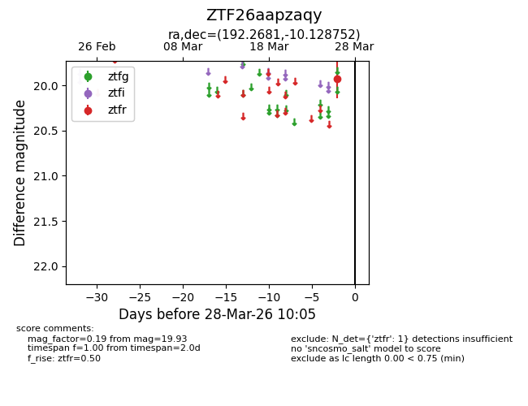
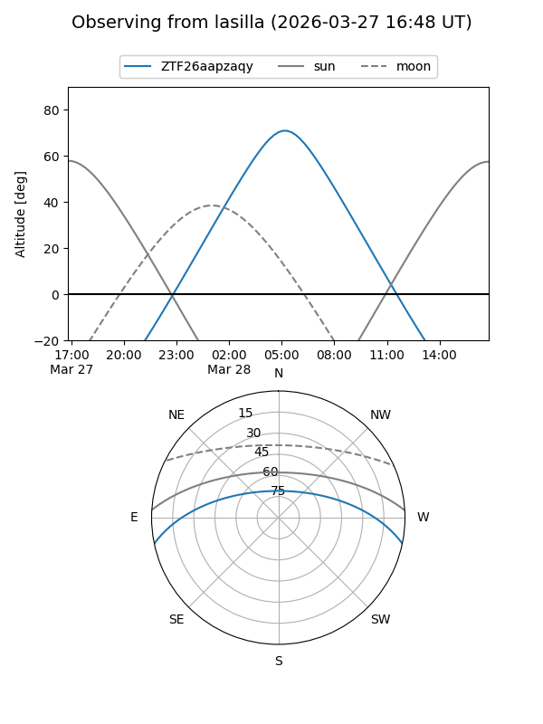
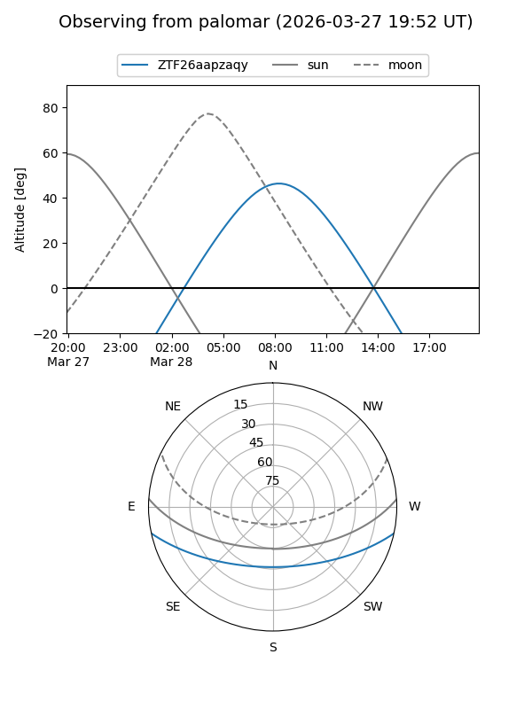

ZTF26aapzaqy
Target ZTF26aapzaqy at 2026-03-28 10:08
Aliases and brokers:
FINK: link
Lasair: link
ALeRCE: link
alt names
ZTF26aapzaqy (ztf,fink_ztf)
Coordinates:
equatorial (ra, dec) = 192.2681,-10.12875
equatorial (HMS+DMS) = 12:49:04.35,-10:07:43.51
galactic (l, b) = (301.9704,+52.73858)
Flags:
Photometry:
last ztfr=19.93
1 ztfr detections
Lightcurve

Visibility


Additional plots